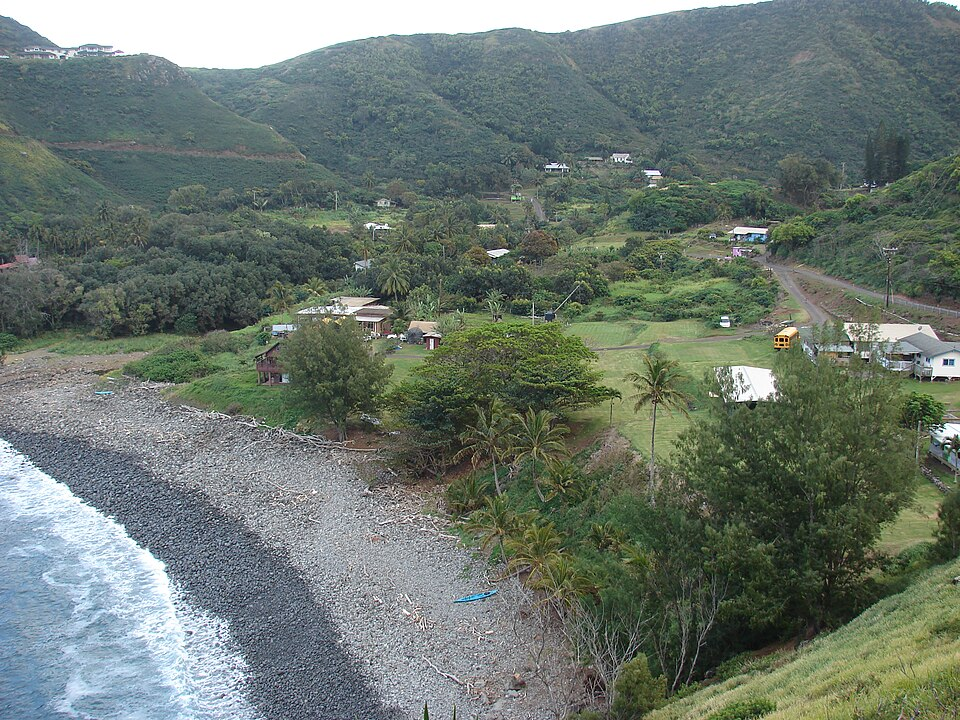

Kahakuloa
Place: Kahakuloa, Maui
Type: Village / valley / traditional agricultural community
Namesake: Kahakuloa (“the tall lord” or “the distant master”), a name connected to a chiefly loʻi deep within the valley
Story it tells: A remote Hawaiian community where loʻi kalo, fishing, ancestral kuleana lands, and water remain central despite plantation agriculture and tourism.

Kahakuloa is a small, isolated village tucked into a valley along the rugged northwestern coast of Maui. Its name is commonly translated as “the tall lord” or “the distant master.” One tradition connects the name to a celebrated loʻi located farther inland that belonged to the haku, or chief, of the land.
For generations, Kahakuloa Valley supported a thriving Hawaiian community built around freshwater and the sea. Kahakuloa Stream fed networks of loʻi kalo across the valley floor, while Kahakuloa Bay provided fish and other marine resources. Kukuipuka Heiau served as a place of refuge, or puʻuhonua, while tradition also identifies a celebrated loʻi farther inland in Kahakuloa Valley as a sanctuary where those who reached its boundaries could receive protection.
Kahakuloa also appears in traditions surrounding some of Maui's best-known figures. Moʻolelo place Māui and his mother Hina in the uplands above the valley, connecting the area with the famous story of Māui slowing the sun so that Hina would have enough daylight to dry her kapa. The powerful Maui chief Kahekili was associated with the dramatic headland beside the village. Puʻu Koaʻe, commonly called Kahakuloa Head, rises more than 600 feet above the sea. Kahekili is remembered for practicing lele kawa, or cliff jumping, from the headland into the ocean below.
The nineteenth century brought new institutions and changes in land ownership, but Kahakuloa remained a small agricultural community. Kuleana lands awarded during the Hawaiian Kingdom placed parcels with families, and descendants of longtime Kahakuloa families continued living and farming in the valley. Kahakuloa Congregational Church, built in the nineteenth century, became another enduring landmark. It still stands prominently near the center of the village.
Commercial agriculture eventually reached even this secluded landscape. During the early twentieth century, pineapple fields spread across portions of the ridges surrounding Kahakuloa. Unlike the enormous plantation landscapes elsewhere on Maui, however, farming here faced the same obstacle that had always shaped the community: isolation. Rugged terrain and the difficulty of transporting crops made large-scale agriculture increasingly uneconomical, and pineapple cultivation eventually disappeared from Kahakuloa. Former fields transitioned to pasture and other agrarian uses.
That isolation remains immediately apparent on the road into Kahakuloa. Kahekili Highway winds along cliffs and ridges on the northern side of West Maui, narrowing in places to a single lane with blind spots and steep drops toward the ocean. The difficult route has helped limit development, but it has also made Kahakuloa a well-known stop for travelers completing the loop around West Maui. Small roadside businesses selling banana bread, shave ice, and other foods have become part of the village's modern identity and provide a small-scale visitor industry.
Families continue cultivating kalo in the valley, and access to the water of Kahakuloa Stream remains closely tied to the community's ability to maintain its loʻi. Disputes over stream diversions and the restoration of water to traditional agricultural systems have made Kahakuloa part of the broader modern struggle over water rights, food production, and the survival of Hawaiian agricultural landscapes.
Kahakuloa today is unusual not because it escaped change, but because so much of its older relationship between community and landscape remains visible and present. Pineapple came and went, a highway reached the valley, and visitors now stop for banana bread on their journey around West Maui. Yet beneath those newer layers are many of the same things that sustained Kahakuloa for generations.